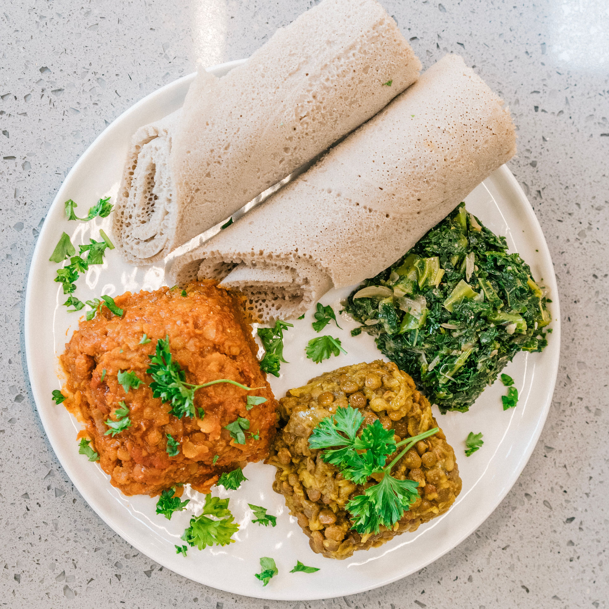

East Africa · Ethiopia
Injera & Misir Wot

About the dish
Injera is a spongy, slightly sour flatbread made from teff, a tiny grain native to the Horn of Africa. It is both the plate and the utensil: stews are spooned onto a large round of injera and eaten by tearing off pieces. Sharing from one platter, and feeding each other a bite called a gursha, is a sign of friendship. Misir wot is a red lentil stew flavored with berbere, a spice blend of chili, fenugreek and more.
Ingredients
Injera
- 2 cups teff flour
- 2 1/2 cups water, plus more to thin the batter
- 1/4 tsp salt
Misir wot
- 1 1/2 cups red lentils, rinsed
- 2 onions, finely chopped
- 3 tbsp niter kibbeh (spiced butter) or vegetable oil
- 3 tbsp berbere spice blend
- 3 garlic cloves, minced
- 1 tbsp tomato paste
- 3 cups water
- Salt to taste
Instructions
Day 1: Start the injera batter
Whisk the teff flour, water and salt in a large bowl until smooth. Cover loosely and leave at room temperature for 24 to 48 hours. The batter should bubble and smell pleasantly sour.
Day 2 or 3: Cook the injera
Stir the batter and thin it with water until it is like crepe batter. Heat a non-stick pan on medium heat. Pour in a thin layer and tilt to spread it. Cook only one side, covered, until the surface is full of small holes and the edges lift. Do not flip it. Stack the rounds on a plate.
Make the lentil stew
Cook the onions in a dry pot on medium heat for 10 minutes, stirring often. Add the niter kibbeh, garlic, berbere and tomato paste and cook for 3 minutes. Add the lentils and water, bring to a boil, then simmer for 25 to 30 minutes until thick. Season with salt.
Serve
Lay an injera on a large plate, spoon the stew on top and serve extra injera rolled on the side. Eat with your right hand by tearing pieces and scooping.
Watch how it's made
Nutrition facts
| Nutrient | Amount |
|---|---|
| Calories | 380 kcal |
| Protein | 18 g |
| Carbohydrates | 62 g |
| Fat | 8 g |